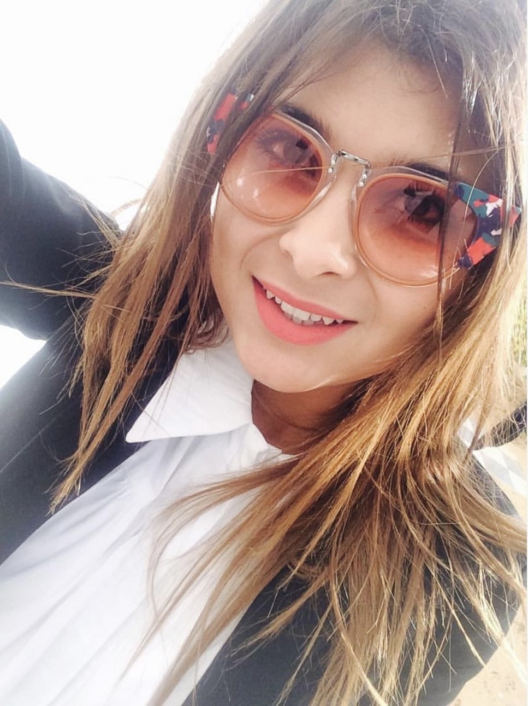

À propos
Mariem Zouari a suivi une licence fondamentale à l'Institut Supérieur d'Informatique et de Multimédia, puis un master de recherche en multimédia axé sur l'intelligence artificielle et l'analyse des sentiments.

Développeur Web & IA
Passionnée par l'intelligence artificielle et le développement web, je suis ouverte aux collaborations professionnelles. Contactez-moi via mon email ou téléphone, ou visitez mon profil LinkedIn.
- Naissance: 6 février 1996
- Téléphone: +216 54751244
- Pays: Sfax, Tunisie
- Âge: 28
- Email: mariem96@gmail.com
- LinkedIn: Disponible